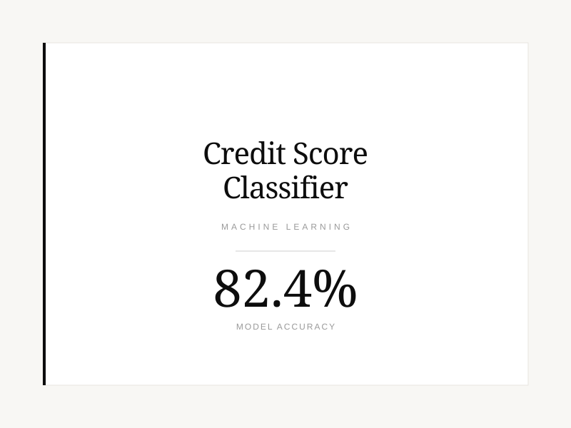
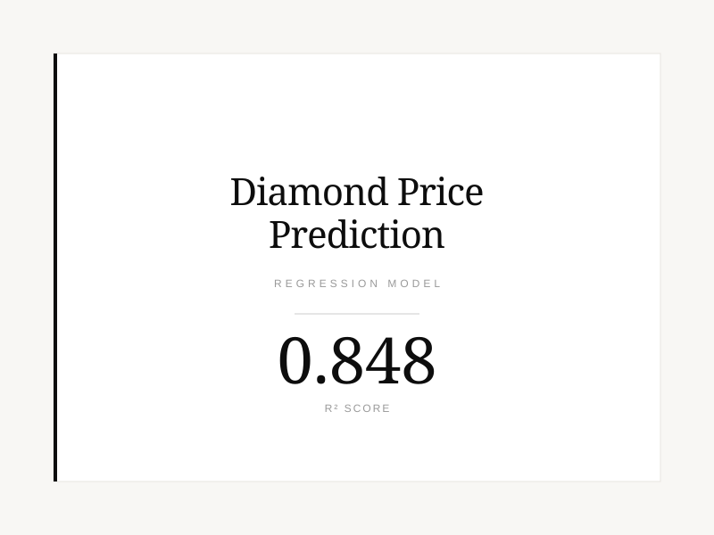
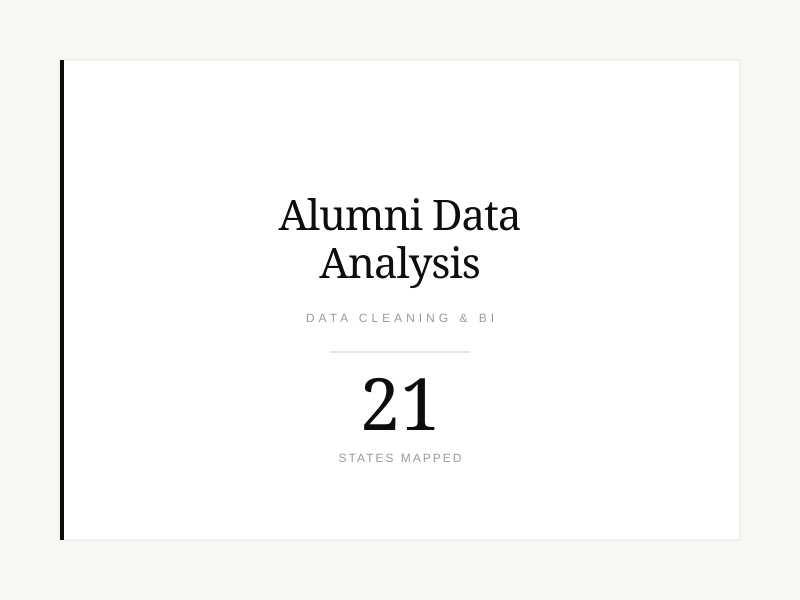
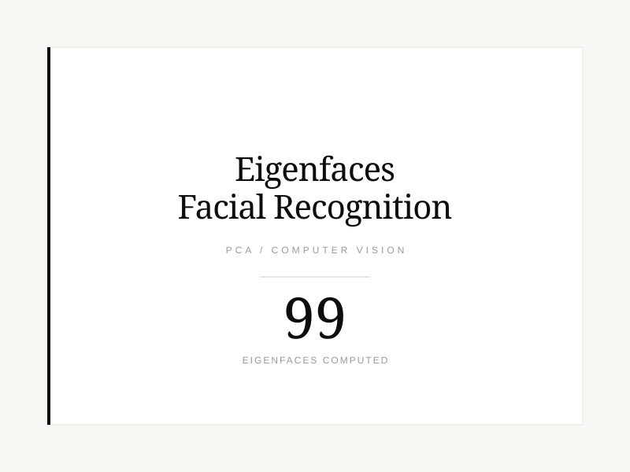
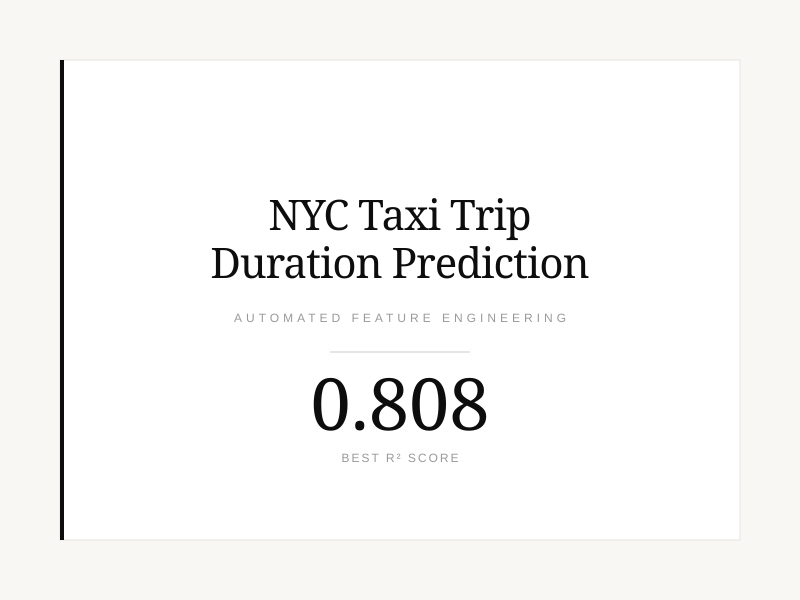

Five projects spanning classification, regression, dashboards, computer vision, and automated feature engineering. Click any project below for the full write-up, results, and code.
A machine learning model that classifies bank customers into credit score categories to support automated credit decisions. Compared Random Forest and KNN, reaching 82.4% accuracy on 100,000 customer records.

A linear regression model predicting diamond prices from carat weight, explaining about 85% of price variation (R² = 0.848) on nearly 54,000 real diamonds.

MBA capstone project: cleaned and decoded enrichment-service demographic data for university alumni, then analyzed giving-capacity indicators by major and built a geographic distribution dashboard in Tableau.

A PCA-based facial recognition system built on 100 face images from the LFWcrop dataset: computed eigenfaces, reconstructed unseen test faces, and compared faces in reduced "face space."

Predicted taxi trip duration in New York City using automated feature engineering (Featuretools) and Gradient Boosting, staged across three feature sets to isolate how much each addition actually helps, reaching R² = 0.808 on 10,000 trips.
